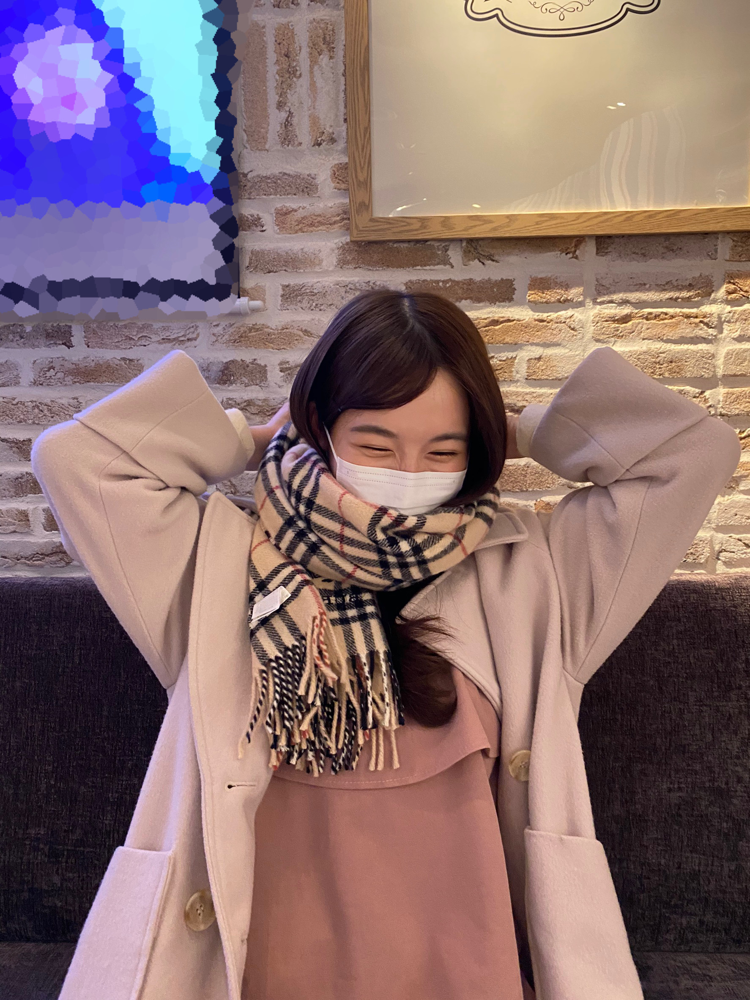
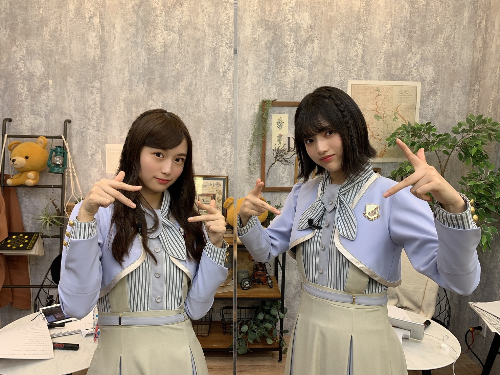
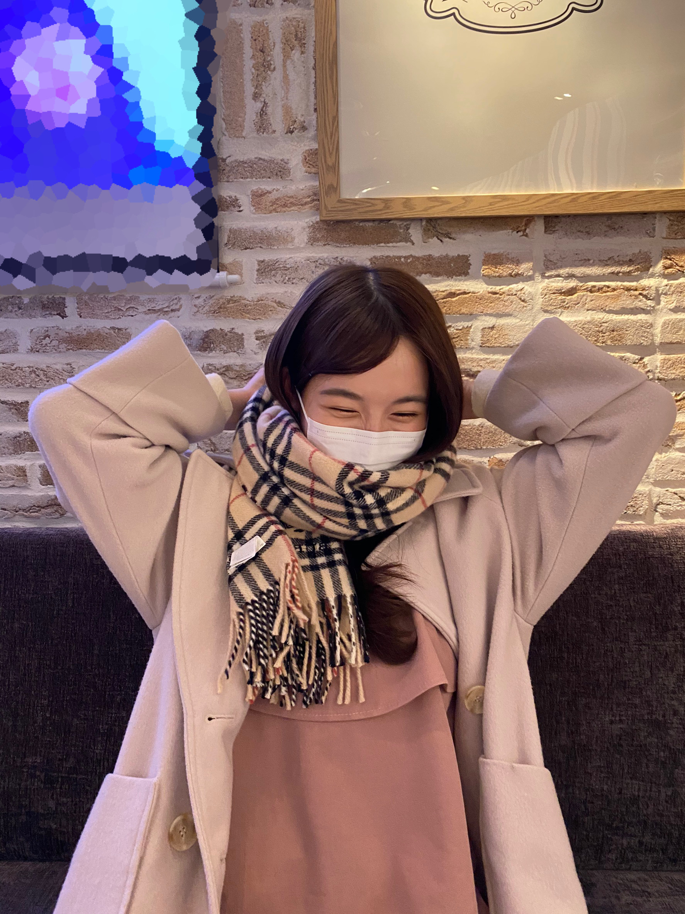
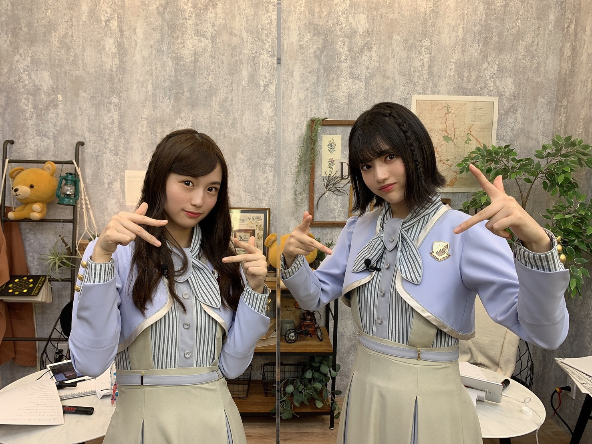

2020/1120Fri君を好きになって初めてわかった。 お疲れ様です！林瑠奈です。
君を好きになって初めてわかった。
好きになるっていうのは、
その人のことをもっと知りたいと思う気持ちのことだ。
だから、僕は君のことをもっと知りたいと思った。
皆さん本日は何の日かご存知ですか。
あ、申し遅れました。 林瑠奈です。
改めまして、本日は何の日かご存知でしょうか。
11月20日。
さやかのお誕生日です！
おめでとう！！！！！！！
同い年になったと思ったら、もう追い越されてしまいました。
18歳ですよ、彼女。
免許取れるやん...って気づいてため息出ます。
どうか、わたしが免許取るまでは待っていてほしいと願うばかりです。
助手席乗せるのとか夢の塊じゃないですか？
楽しみ☺︎

推しメンとして挙げさしてもらってから、早9ヶ月。
まさかここまで仲良くなれると思ってなかったっていうのが本音で、
だからこそ今の独特の感覚とか、関係性が凄く愛おしくて堪らないです。
これからも、色んな景色を一緒に見たいなと思う大切な人です。
最後に、星が綺麗ですね。
さやかは頑張ってるよ。
...........................................................................
先日は猫舌SHOWROOMありがとうございました。
お相手は前述した掛橋沙耶香でした！
いやぁ超楽しかったです！！！
またやりたいなって終わってすぐ思いましたもん。
2人の関係性というか、普段の素もお見せできたんじゃないかなと...
いや、違うんですよ。マウントとかじゃないんですけど、
さやかの表情とか、なかなかレアな姿を引き出せたんじゃないかなって思ってるんです。
どう思います？皆さん。ねぇ
沢山の方に見ていただけて嬉しかったです。
ありがとうございました！！！！！

さやかを奪っチャラ男〜〜！！！！
...........................................................................
26枚目シングルの選抜メンバーが発表されましたね。
レイちゃん、まゆたん
初選抜おめでとう！！！！！
とてもとても嬉しいことです。
さくちゃん、かっきー、あやめちゃんもおめでとう！
新4期生は今回のシングルから本格参加という形になります。
このことへの感謝を心に留めて頑張りますので、
よろしくお願い致します！！！！
...........................................................................
明日はミュウちゃんです。
みゆちゃんの携帯早く治してあげて
アディオス！！！！！！！！！！！！！！！！！！
次は質問に答えさせていただきますね。
かしこ
君を好きになって初めてわかった。
好きになるっていうのは、
その人のことをもっと知りたいと思う気持ちのことだ。
だから、僕は君のことをもっと知りたいと思った。
皆さん本日は何の日かご存知ですか。
あ、申し遅れました。 林瑠奈です。
改めまして、本日は何の日かご存知でしょうか。
11月20日。
さやかのお誕生日です！
おめでとう！！！！！！！
同い年になったと思ったら、もう追い越されてしまいました。
18歳ですよ、彼女。
免許取れるやん...って気づいてため息出ます。
どうか、わたしが免許取るまでは待っていてほしいと願うばかりです。
助手席乗せるのとか夢の塊じゃないですか？
楽しみ☺︎

推しメンとして挙げさしてもらってから、早9ヶ月。
まさかここまで仲良くなれると思ってなかったっていうのが本音で、
だからこそ今の独特の感覚とか、関係性が凄く愛おしくて堪らないです。
これからも、色んな景色を一緒に見たいなと思う大切な人です。
最後に、星が綺麗ですね。
さやかは頑張ってるよ。
...........................................................................
先日は猫舌SHOWROOMありがとうございました。
お相手は前述した掛橋沙耶香でした！
いやぁ超楽しかったです！！！
またやりたいなって終わってすぐ思いましたもん。
2人の関係性というか、普段の素もお見せできたんじゃないかなと...
いや、違うんですよ。マウントとかじゃないんですけど、
さやかの表情とか、なかなかレアな姿を引き出せたんじゃないかなって思ってるんです。
どう思います？皆さん。ねぇ
沢山の方に見ていただけて嬉しかったです。
ありがとうございました！！！！！

さやかを奪っチャラ男〜〜！！！！
...........................................................................
26枚目シングルの選抜メンバーが発表されましたね。
レイちゃん、まゆたん
初選抜おめでとう！！！！！
とてもとても嬉しいことです。
さくちゃん、かっきー、あやめちゃんもおめでとう！
新4期生は今回のシングルから本格参加という形になります。
このことへの感謝を心に留めて頑張りますので、
よろしくお願い致します！！！！
...........................................................................
明日はミュウちゃんです。
みゆちゃんの携帯早く治してあげて
アディオス！！！！！！！！！！！！！！！！！！
次は質問に答えさせていただきますね。
かしこ
2020/11/20 17:48

PROFILE
新4期生リレー
202104
| SUN | MON | TUE | WED | THU | FRI | SAT |
|---|---|---|---|---|---|---|
| 1 | 2 | 3 | ||||
| 4 | 5 | 6 | 7 | 8 | 9 | 10 |
| 11 | 12 | 13 | 14 | 15 | 16 | 17 |
| 18 | 19 | 20 | 21 | 22 | 23 | 24 |
| 25 | 26 | 27 | 28 | 29 | 30 | |

コメント(217)
と思ったら毎回！付いてました。わっしょいです！
更新ありがと！！今回は愛のブログですね？
っていうか前回コメント遅れてさぁせんでした！
さぁちゃん一個差やけど仲良くしてるりかちゃん
二個も違うんやね？同い年感出てるけど高校の時の
二個上ってめっちゃ先輩感ありません？
その壁ぶち壊したはやしすごいです笑尊敬します笑
猫舌かな？でラジオ始まった弓木ちゃんを心から
祝ってて本当にすごいなと思ったよ
人間醜い感情もあるもんやけど、あるかもしれんけど
心から祝えるって本当にすごいこと。
相手をいかに好きで尊敬してて応援してるかが
よくわかってすごいなぁと思ったよ
ポエム開幕やとちょっといいですね笑
想像が掻き立てられる感じが。
本人にしかしっかり意味がわからんようか言葉で
締めるのいいですね笑メッセージで。
と思ったら次のブロックもさぁちゃんの話してる笑
マウント取らんとか言って
「どう思います？皆さん。ねぇ」で
あれこれ嫉妬させてないこれ？え？って思わせて
最後しっかりチャラ男で奪っていくはやし。
立ち位置がメンバーとオタどっちかわからん笑
アンダーになるんかな？応援しますよぉ！！
ミュウちゃんの携帯どうなってるんやろ
アディオス18個
びっくり！！また手でずらしながら数えて
16でメンバーの数か！と思ったら18になりました笑
たしかめでさらに1回数えました笑
これは掛橋の年齢ですか？笑
そうすると先周の12はなんやったんやろ笑（意味はないと予想）
今回読みやすいなーと思って
1行か2行書いて1行空けてるからかな？と思ったけど
いつも前回も多くて4行やし大して変わらんし
でもそれ関係あるんかなーと思いました
読みやすい内容やったから説もあるけど。
チャラ男番長の写真かわいい笑黒髪が制服に合う
ちなみにはやしが上げたらカレーの写真であろうと
ブレ林の写真であろうと保存してます笑
アディオス！！！！！！！！！！！！！！！！！！
↑数えながら打ってまた確かめました笑
っていうかチャラ男番長生配信は強心臓すぎません？笑
曲当てとかすごかったはやし。あとはやし歌上手いわ。
一応質問
・ひじきって10回言ってください。
てかどんなイントネーションで言ってます？
・クリスタルプリンセスロッド持った写真ないですか？
今日カラオケで乃木坂の歌だけで3時間友達と歌ったら
めっちゃ楽しくて乃木坂いいなぁってなりました
っていうかはやし健康でいてね笑
かしこ
仲間のヲタさん達と林さんの素晴らしさを語るとき、
「『負けるなしょげるな林瑠奈、今日も1日頑張るな
(ピンポーン)』氏」とお呼びしてましたが、
「884氏」と呼ぶようにしてもよろしいでしょうか？
質問！
・免許取ったらどんな車に乗りたいですか？
・好きなキャラクターは何ですか？
・瑠奈ちゃんはメンバーのモバメ取ってますか？もし取ってたら誰取ってますか！
アディオスーーー！
今日はさぁちゃんの誕生日ですね！おめでたい！
林さんは今日でさぁちゃんと同い年じゃなくなったぁ〜と言っていましたが、僕は今日から晴れてさぁちゃんと同い年になれました笑
水曜日の猫舌も楽しかった〜普段見れないさぁちゃんが見れてよかった！これからもさぁちゃんと仲良くしてね！
あ、あとまた理々杏とのエピソード聞きたいなぁ
絶対に自分から話しかけれないだろうから、できれば林さんから理々杏に話しかけてあげてね笑
掛橋ちゃんの誕生日めでたいね！
お家でクラッカー5連発しときます
猫舌もお疲れ様！
楽しそうで何よりですね！
それでは！アディオスかしこ
猫舌SHOWROOM見ましたよ〜！
2時間たっぷりるなぴを見れて嬉しかったです。
しかもさぁちゃんとの絡み…
さぁちゃんはすごくツンデレですね笑
最初は「そんなことない」と言っていたのに、途中からは「皆んなの前で言わないで」に変わっていたのが、やっぱりさぁちゃんもるなぴが大好きなんだな、というのが伝わってきました。
またこのコンビ、見たいです。
26thシングルの表題メンバーに4期生が2人増えましたね！
ドンドン新しい世代の子のパフォーマンスを見られるのは嬉しいです。
また、4期生楽曲もとても楽しみです！
4期生ライブ待ってます！
あでぃおす！！！
さあちゃん愛めっちゃ伝わってきた！！
僕も負けないようにるなぴ愛全開で行きますね笑笑
質問「冬にやる手持ち花火ってなんかよくないですか？」
幻想的でロマンがある気がする。ふふ。
そんじゃ今回はこの辺でアディオス！！アディオス！！！
(大事なので2回言いました。沸かすほど熱い愛を。。)
2時間お疲れ様でした(●´˘`●)
新衣装とっても似合ってました。
三つ編みヘアも可愛かったです
挑戦してみたい仕事のところ。
演技上手だからドラマ出てほしいし
ミュージカルも 意外だったけど
歌めちゃくちゃ上手だから出演するなら
絶対に観に行きたいって思いました!
(ラジオはいわずもがな)
役作りでのお団子ヘアも待ってます!笑
●!質問です!●
瑠奈ちゃんが観に行ったことのある
舞台は何ですか？
私、瑠奈ちゃんの いつでも誰に対しても
飾らずに接する感じが好きです。
それでいて 自分や身の周りのことを
しっかり客観視できていて冷静にみえる
ところも好きです。
リラックスしたい時におすすめの曲の
選曲センスも素敵だなって思いました。
静かで落ち着いているけど
切なさの残る感じ…。
それから
基本さやかちゃんには甘々で優しいのに
時折キレのある発言が出るところや
独特な言葉選び。
クイズで正解したときのハンドシェイクや
ジャルジャルさんのコントをしてた
ところなど色々面白かったです!
あと 好きな動物が気になっていたので
カワウソを飼いたいということが分かって
嬉しかったです。
(カワウソ可愛いですよね
変わらず数字の２が好きなところも
何だか嬉しかったです。
私は瑠奈ちゃんを色で表すなら暖色かな。
(私服で黒が多いイメージだから
さやかちゃんは黒って言ったのかな?)
また他のメンバーとのペアも
見てみたいです。
メンバーによって接し方が変わりそうで
そういうところも楽しみです(笑)
瑠奈ちゃんがさやかちゃんを
甘やかすように
誰か瑠奈ちゃんのことを甘々に
甘やかしてくれるメンバーがいたら
いいなぁ…なんて。
SHOWROOM見てて
思っちゃいました(*´˘`*)
コメント凄い長くなってしまって
ごめんなさい(_ _;)
今日もブログ更新ありがとう。
(P.S 林の彼女か妹になりたい←)
……あでぃおす!!
2人があんなに仲良いのを初めて知りました！
やっぱり4期生最高！
ここで質問させてもろて‼︎
うちは受験勉強真っ最中の高校3年生です。応援してほしいな
何橋さんかと思ったら
掛橋さんでしたかやはり…
おめでとうございます！
今日がブログ担当日ってなんか運命的なものを感じるよね笑
こないだの猫舌SHOWROOMめっちゃ面白かった❗
さぁちゃんとしてた「うぅ〜❗」ってやつの名前ってなんなん？笑 気になるから教えてけろ❗
猫舌の質問欄でも書かせてもらったんやけど、はやしとさぁちゃんが初めて話した馴れ初め的なエピソードがあったら教えて欲しいです❗❗
これからもさぁちゃんとずっと仲良くね❗
また5日後のブログ更新待ってまーす❗
めっちゃおもしろかった！
推しメンといっしょに番組やれて、推しメンの誕生日にブログまわってくるなんてなかなか持ってるねぇ！
今さあちゃんののぎおび観たよ！
髪切ったけどめっちゃ似合ってるねぇ！
もう４期生ライブのリハ始まってるよね？
体調に気をつけてみんな頑張ってね！
僕も最初観れないかもしれなかったけど、なんとか観れそうなスケジュールになりそう！
楽しみにしてるね！
応援してます！
掛橋ちゃんおめでとうです。
誕生日の日にのぎおびやってくれるなんて素敵すぎじゃないですか！
全集中の呼吸で観てました。
もちろん見てましたよね？
今回ののぎおびはどのくらいスクショ撮りました？
僕ももっともっとたくさん知りたいです。
掛林の話たくさん聞かせて下さい。
ブログのタイミングがちょうど良かったんだね。
今日書けて嬉しかったんじゃない？
猫舌も一緒だったしね。
きっと幸せな一週間になったことでしょう。
のぎおびはもちろん観たよね？
新しい髪型はどうですか？
すごく似合ってるよね。
一般的には愛が重たいって言われちゃうのかもしれないけど、俺は素晴らしいと思います。
これからもっともっと愛を深めていって下さい。
そして、いつか二人とも選抜入りして下さい。
二人なら必ず達成出来ると思います。
ステーキとハンバーグどっちが好きですか？
猫舌SHOWROOMお疲れ様！「図書室の君へ」私も好き
さぁちゃんの誕生日やね。
おめでとうやね。
シングル本格的参加頑張ってね
【質問】ペンネーム変えても覚えてくれますか？
愛媛県在住 中３女子 音より
追伸：今日も一日お疲れ様！
猫舌SHOWROOM観たよ〜！
瑠奈ちゃんのサポートが完璧過ぎて、さやかちゃんと瑠奈ちゃんで瑠奈ちゃんの方が大人っぽく見えた！
秋深し
寒くなってきたね
最近はどんなこと
考えてますか
先程の沙耶香ちゃんの
SHOWROOMで林のこと
すごい楽しそうに話してて
本当に好きなんだなって
思ったよ
幸せにしてあげてな
昨日の猫舌の二人の
やり取りは最高だったね
いつか、林と沙耶香ちゃんの
Wセンターが見たい
今度の配信ライブで
林のコールをどうしようか
考えてて
どれがいいかな
自分だけのコールをしたいので
気に入ったものあったらいいな
①はやしー
②るなぴー
③るなおー
④るなちゃーん
⑤るなしー
⑥るんちゃーん
⑦るなりーん（りんは林も含み）
この他でもコールされて
嬉しいものあれば教えてほしいな
体に気をつけてね
ライブ楽しみだー
相性がいいって不思議だね。何がどうな
って巡り会うのか。
長いアイドル人生、さぁちゃんと二人、
乃木坂を盛り上げていってね。
一番わかってるのが近くにいるメンバー
だもんね。
猫舌。るなちゃんの進行力とさぁちゃん
の健気さ。確かにいいバランスでした。
来年からが本当の意味でのスタートです
ね。４期が選抜に５人もはいって、当に
新生。楽しんでいきましょう。
猫舌SRお疲れ様でした！普段の仲睦まじい感じが伝わってきて一体何を見せられてるんや...??ってくらいイチャイチャしてましたねｗ
普段はるなぴが面倒見の良いお姉さんみたいな感じになって掛橋ちゃんはツンデレの妹みたいな感じなんですかね？
初めての選抜発表のあの空間はいつもとは違う空気に感じ緊張したと思いますが、ようやくあの場に新4期生も登場して嬉しかったです！
新4期生が参加した曲がとても楽しみで待ち遠しいです！
ブログに素敵な写真をありがとう！
これからも応援してます！
--∫-- ∫-∫-- ∫∫ # ∫-∫∫∫ ---∫-
それが上手くさぁちゃんを引き出してくれていたなぁと
思ったよ！
あの猫舌で、林のファンになってしまいました！
握手会とか行けたらなぁって思ってます！
質問：林は、いつか宇宙旅行に行ってみたいですか？
ー質問ー
・呼ばれたいあだ名ってあるかな？
・皆にすすめたいもの、ことってある？
・気晴らしではよく何をする？
ありがとう！次回も楽しみにしているよ。
早く会いたいのにコロナで会えなくて寂しい。
握手会行った気分になる一言ください！
なんかもう。最高wwまさしくそれがぴったしだった！
テスト期間にはいってしまいました。るなぴはどやって乗り越えてますか！おしえてーーーーー。
新しい活動。いっぱい楽しんで！そして頑張って！
ミーグリ楽しみにしてます。
ばいばいびーーーん！！！
体調は大丈夫ですか？コロナも流行ってるので気をつけてくださいね。
質問ですが、
1番好きな太陽系の惑星はなんですか？
これからも応援させていただきます！
次の更新も首を長くして待ってます！
今日ゴミ捨て行くとき外が曇りで暗かったので、さぞかし寒いだろうと思い覚悟して外に出たたら、生暖かいのに「さむっ」って言っちゃいました。先入観ってやつですかね！
猫舌showroom お疲れ様でした、北川悠理ちゃんの東大王と同じ時間でしたね、皆んな色んな所で活躍されてますね、さぁちゃんが妹っぽいですね、瑠奈ちゃんがイケメンに見えます。 璃果ちゃん嫉妬してましたよ。先程、さぁちゃんがのぎおびで免許の話してましたんで、一緒に教習所企画とかあると良いですね！
今日はさぁちゃんの誕生日ですね、おめでとう！今日は電子レンジで出来る鍋と苺のケーキで勝手にお祝いさせてもらいます。いつか4期生全員で会食出来たら良いですね。
おやすみ
部活で猫舌は途中からしか見れませんでしたが、さぁちゃんがじゃあね。出てこなかった時にフォローしててお父さんみたいでかっこよかったです。
ここでお悩み相談なんですけど、最近掛林のことを考えすぎて何も手につきません。どうしたらいいですか？
次のブログも楽しみにしてます
アディオス！
かしこ
お疲れ様です！SHOWROOM見ました！ 凄くよかったです！
推しの誕生日にブログ回ってきて、よかったですね！
(^▽^)/
この間から、テスト週間が始まりました！ 頑張ろうと思います！応援していただけたら嬉しいです。
質問です！
るなぴは野生動物を見たことはありますか？
私はあります！ ヌートリアとかなら見ました！この間はサルが出没したそうです。
私は、るなぴのことをとても尊敬しています。師匠って呼んでもいいですか？
答えてくれたらとてもうれしいです！
お体に気をつけてお過ごしください。
またかきこむねー！
またねー！
さやかちゃん誕生日おめでとう〜〜〜〜！！！
が溢れたブログだったね☺︎☺︎
推しの推しの話を推しがしてるの聞くの大好きなので←
とっても楽しく読みました！！！（＾ν＾）
猫舌もちょっとだけ見た！！
なんというか本当に2人は波長が合うよねえ、、、
妹キャラとお姉さんキャラで話し方も
全く違う2人なんだけどるなぴはさやかちゃんが大好き
だし、さやかちゃんもるなぴの言葉でたくさん
励まされてると思うし！！！まあ何が言いたいかって
言うと、掛林って最高って話ですよね。
いつかるなぴのミュージカル見たいです☺︎
質問！
◉勉強のやる気が出ないとき何してますか？？
◉るなぴのお気に入りの私服教えてください！！
さぁちゃんの誕生日おめでとうございます(^^♪
猫舌showroom見ましたー！さぁちゃんの可愛い反応や色んな反応を引き出して頂いて本当にありがとうございます笑
マウントめっちゃとっても全然気にしないのでもっとお二人の関係を自慢して欲しいです！笑
さぁちゃんが「林と色んなことしたい」って言った時の林瑠奈ちゃんの反応がめっちゃ可愛かったです！
大人っぽくトークを進めたり、フォローする場面を格好いいと思えば、コメントや質問をなかなか決められない所が面白かったり楽しすぎる配信をありがとうございます(^o^)
陰ながらこれからも応援してます！
水曜の猫舌showroom見たよ～ バイト終わりに見たからめちゃくちゃ癒された！ どっちかって言うとるなちゃんの方が大人っぽくてカップルなら男性だなーって思ったよ
自分の自己紹介を忘れるほどさやかちゃんが好きなんだね～ わかるよー可愛いもんね 声もかわいいし性格もかわいいし最高すぎだよ
話は変わるけど、26枚目のシングル決まったね るなちゃんたち新四期にとっては初のシングルだし緊張するかもしれないけど応援してるよ！ 個人的には四期16人の新曲欲しいな～
星がきれいですね！を知ってるなんて流石るなちゃんだね 語彙力あるねー (初めて聞いたとき干し柿ですねに聞こえたんだよなー)
そんなことはおいといて、また次のブログも楽しみにしてるねー
かしこ
更新ありがとううううう
まってたよおおおお
↓↓
さやかのショートとロングどっちが好きですか！！
いつもさやかを元気にさせてくれてありがとう。
これからもよろしくお願いしますね。
これからも仲良しの姿を沢山見せてくださいね
るなぴとさぁちゃんはスゴく仲が良かったんだね！知らなかったよ。あとなんかるなぴも１８歳って感じがするけどね。適当な感覚的に。笑これからも仲良くやっていって(^^)
新４期生も今回のシングルから本格参加なんだ。るなぴは何の曲に出るのかな？楽しみにしてるよ(^^)
じゃあ。
コメントする